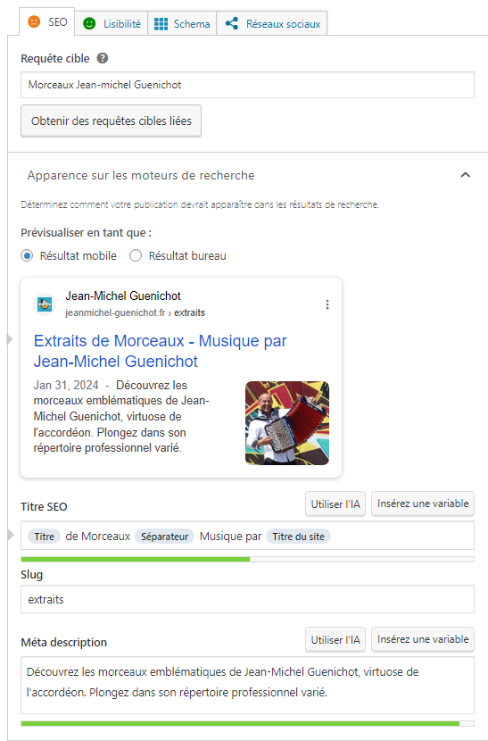
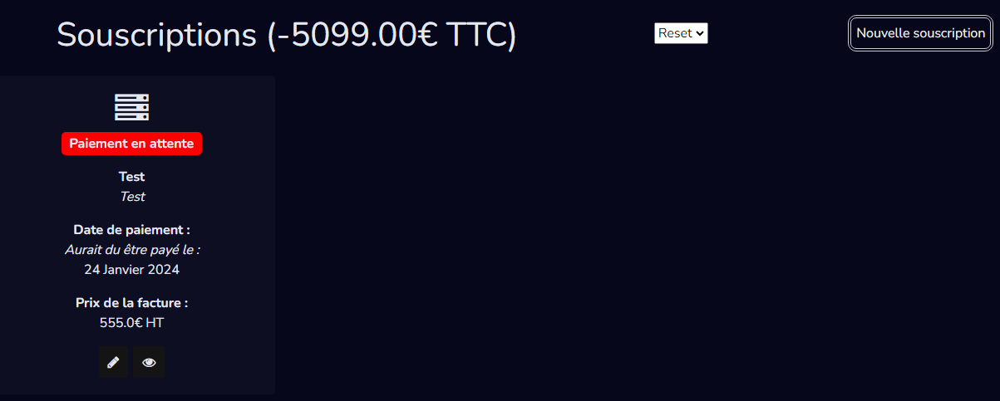
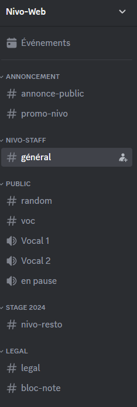
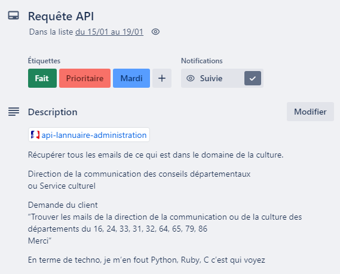

Mon deuxième stage
Nivo-Web
08/01/2024 - 16/02/2024
Présentation
Ce stage de deuxième année s'est déroulé chez Nivo-Web, travaillant en collaboration grâce à des outils comme Git, Github et Trello. Mon rôle était polyvalent, impliquant une autoformation constante et une contribution au Web Design à travers la création de maquettes. J'ai également travaillé sur le développement des fonctionnalités avancées du site, telles qu'une API Bancaire et la gestion automatisée de factures en lien avec l'intranet. Mon travail s'est également étendue à la mise en place de solutions SEO sur Wordpress. J'ai été invité à m'adapter à diverses plateformes et à fournir des solutions innovantes dans un environnement professionnel exigeant.
Langages & Outils

Ruby

Ruby On Rails

Github

Trello

Wordpress

RubyMine
Organisation et suivi du stage avec l'outil Trello
Collecter, suivre et orienter des demandes
Planifier les activités
Pendant mon deuxième stage en BTS SIO, j'ai eu l'occasion d'utiliser l'outil Trello. En collaboration avec notre maître de stage nous avons organisé et suivi notre travail à l'aide de cartes Trello. Notre tuteur y plaçait des cartes détaillant les tâches à effectuer, accompagnées d'étiquettes indiquant leur priorité et leur date d'échéance. Cette méthode nous a permis de collecter efficacement les demandes de tâches à réaliser, de suivre leur évolution tout au long du stage
Réalisation du SEO pour un client
Référencer les services en ligne de l’organisation et mesurer leur visibilité
Travaillant sur le CMS WordPress, nous avons collaboré avec un client pour développer son site web. Une partie de notre travail était d'optimiser le référencement du site pour améliorer sa visibilité en ligne. Pour ce faire, nous avons identifié des requêtes cibles pertinentes, rédigé des titres SEO accrocheurs et des méta-descriptions informatives. En prenant en charge ces aspects du SEO, nous avons contribué à améliorer la visibilité en ligne du site de notre client.
Amélioration de la page d'Accueil de l'intra, et création de la page de gestion des souscriptions du site Nivo-Web
Participer à l’évolution d’un site Web exploitant les données de l’organisation
Suite à la demande de notre tueur, nous avons eu pour mission d'améliorer la page d'accueil de l'intranet. Après avoir conçu une maquette sur Canva, validée par notre tuteur, nous l'avons implémentée sur le site, en Ruby et en Sass. L'objectif principal était d'améliorer certes l'aspect visuel de la page d'accueil en vue de sa diffusion publique. Mais aussi d'afficher de manière claires les factures, devis et souscriptions récents, accompagnés de liens de redirections et d'informations succinctes.
J'ai eu l'occasion de contribuer à la création de la page de gestion des souscriptions sur l'intranet de Nivo-Web. Pour cela, nous avons utilisé la méthode CRUD (Create, Read, Update, Delete) pour traiter efficacement les données relatives aux souscriptions. En utilisant les outils offerts par Ruby, notamment les scaffolds, nous avons pu mettre en place une interface permettant d'afficher, d'ajouter, de modifier et de supprimer les informations sur les souscriptions.
Réalisation de briefing chaque matin et chaque fin de journée
Analyser les objectifs et les modalités d’organisation d’un projet
En deuxième année lors de mon stage, chaque fin de journée se terminait de la même manière. Avec notre tuteur, nous faisions un bilan de ce qui a été fait lors de la journée, ce qui a été compliqué à réaliser ou les potentielles incompréhensions, les tâches fini en avance ou celle qui pourrait prendre du retard. Cela nous permettait de voir si les objectifs quotidien avait été respecté et nous définissions ceux du lendemain. Tout cela se passait sur la plateforme Discord, sur un serveur personnalisé pour l'entreprise
Déploiement du site d'un client sur Hostinger
Déployer un service
Nous avons dû, pendant le stage, effectuer le déploiement du site d'un client sur Hostinger. Tout d'abord, j'ai créé une archive du site avec Duplicator Pro. Ensuite, j'ai téléchargé cette archive sur l'hébergement Hostinger et suivi les étapes de l'installateur.php pour configurer le site. Le site a été configuré avec le nom de domaine airbasknb.fr et l'hébergement sur swhaby.fr. J'ai également activé tous les plugins nécessaires et vérifié que les URL du site étaient en HTTPS dans les paramètres généraux.
Traiter des demandes concernant les applications
À la demande d'un client, j'ai réalisé un script en Ruby pour effectuer des requêtes API visant à récupérer des informations spécifiques. Plus précisément, le client souhaitait obtenir les adresses e-mail des directions de la communication ou de la culture des départements sélectionnés. En suivant les instructions fournies, j'ai réalisé un script pour extraire les données demandées, puis je les ai organisées dans un fichier .csv.
